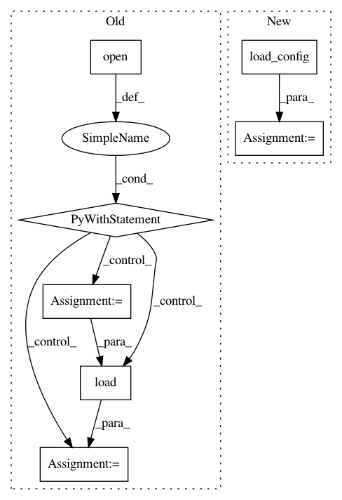

d29fbf497b46ef690c5c3187f3e6d6ff2a07fe12,lxmls/deep_learning/mlp.py,NumpyMLP,load,#NumpyMLP#Any#,202
Before Change
Load model
with open(model_path) as fid:
par = cPickle.load(fid, cPickle.HIGHEST_PROTOCOL)
params = par[:len(par)//2]
actvfunc = par[len(par)//2:]
return params, actvfunc
def plot_weights(self, show=True, aspect="auto"):
After Change
// Configuration un yaml format
config_file = "%s/config.yml" % model_folder
config = load_config(config_file)
// Computation graph parameters as pickle file
parameter_file = "%s/parameters.pkl" % model_folder
loaded_parameters = load_parameters(parameter_file)
In pattern: SUPERPATTERN
Frequency: 3
Non-data size: 7
Instances
Project Name: LxMLS/lxmls-toolkit
Commit Name: d29fbf497b46ef690c5c3187f3e6d6ff2a07fe12
Time: 2018-01-28
Author: ramon@astudillo.com
File Name: lxmls/deep_learning/mlp.py
Class Name: NumpyMLP
Method Name: load
Project Name: LxMLS/lxmls-toolkit
Commit Name: 7d4d63db34d96a6d6d2c1b60bc14ffa9f0ce8919
Time: 2018-01-30
Author: ramon@astudillo.com
File Name: lxmls/deep_learning/mlp.py
Class Name: NumpyMLP
Method Name: load
Project Name: kubeflow/kubeflow
Commit Name: 2f15d8dbe85f0081652c1e5363f6a8c547a3e5fc
Time: 2019-09-18
Author: jeremy+github@lewi.us
File Name: testing/kfctl/kfctl_go_test.py
Class Name:
Method Name: test_build_kfctl_go